Each concept below is a full homepage design using Rocco's real branding, story and locations — and each one maps directly to layouts Square Online supports, so what you pick is what gets built. Click any option to view it full-screen.
Warm, cream-and-charcoal neighbourhood Italian. Serif headlines, a classic dotted-line menu, and the yellow used as a considered accent. Feels established and family-run.
View Option AMoody and premium: charcoal black, full-bleed photography, big condensed type, yellow burning through like oven fire. Feels like a destination pizzeria with a cult following.
View Option BThe logo's yellow turned all the way up. Playful, bold, sticker-style cards and thick outlines — leans into "Saving the world from bad pizza". Feels fun, fast and famous on Instagram.
View Option C